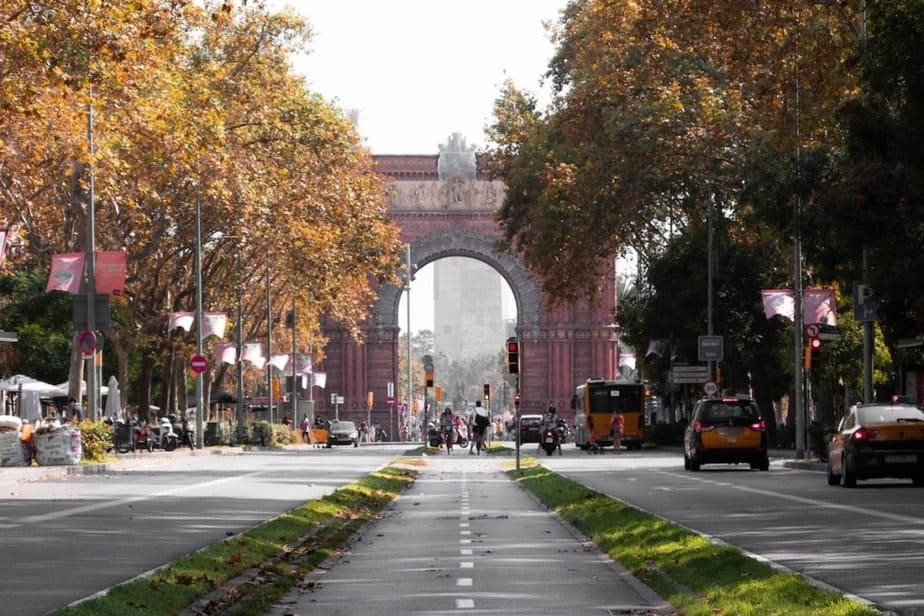
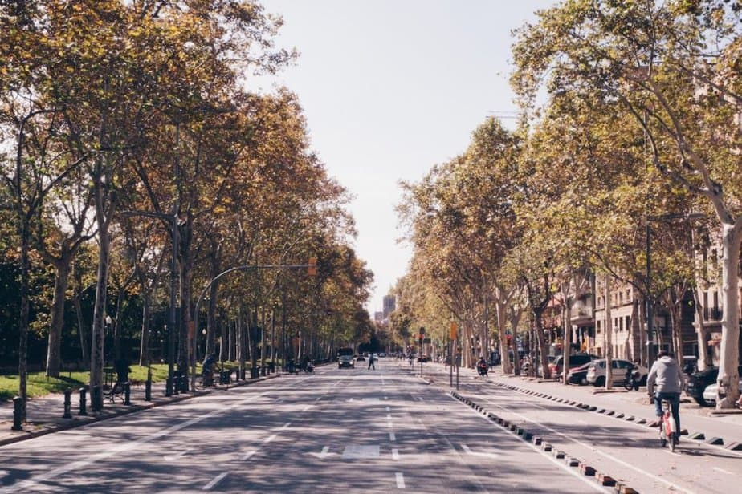

Where to Rent An Electric Bike in Barcelona?
Barcelona, Spain, is one of the most popular tourist destinations in Europe. It is the largest city in Catalonia and the second largest in Spain.…

Barcelona, Spain, is one of the most popular tourist destinations in Europe. It is the largest city in Catalonia and the second largest in Spain. Home to Barcelona FC and full of staggeringly beautiful architecture, including famous works by Gaudi, Casanovas, and Montaner, Barcelona is a must-see destination. The La Sagrada Familia basilica, designed by Gaudi is particularly worth a visit.
What’s more, the city is situated ideally for renting an electric bike and exploring the Catalonian coast, mountains, and countryside. Within easy biking distance from the city you can find beautiful views of the Mediterranean sea, explore the Serra de Collserola mountain range, and travel quickly and easily across the 170km plain on which the city is located.
For stunning views of Barcelona, ride your electric rental bike to the Tibidabo, a hill that overlooks the entire city. Atop the hill, at an elevation of 512m, is the impressive Sagrat Cor church that is open to visitors.
And thanks to the numerous dedicated bike lanes crisscrossing the city, Barcelona is a safe and easy place to ride an ebike.
The bike lanes are separated from the road by strips of grass and trees, or by double white lines with solid markets between them. Just like when renting an electric bike in Amsterdam, you are set apart from the traffic.
These dedicated bike lanes take you through the most picturesque neighbourhoods and right up to the most famous monuments. With so many things to see and do and such fantastic facilities, it is no wonder the city attracts over five million visitors annually.

Electric Bike Rental Barcelona
There are several electric bike rental companies in Barcelona to choose from.
If you “no hablo español” (don’t speak Spanish) don’t worry. Staff in electric bike rental shops in Barcelona normally speak some English and will be happy to accommodate you.
eBike Rental Barcelona | Price Per Day: $$
eBike rental Barcelona is a great option for renting an ebike during your stay in the city. They have dozens of electric bikes to choose from including basic city ebikes, mountain electric bikes (e-MBTs), and folding ebikes.
A helmet is included with every bike rented, as is a lock to secure your ebike against theft. Some models also come with a child seat for those of you who are visiting Barcelona with young children.
When renting an electric bike at eBike Rental Barcelona you will need to bring a valid ID if you are European or a passport if you are coming from outside of the European Union.
Bookings can be cancelled 48hrs in advance without any cost. Costs apply after that. Cancellations within 24hrs will be fully charged, as will ebikes booked for a group where one person does not show up.
Types of Electric Bike For Rent
Here is a full list of the ebike’s available with the day price (24h) for rental:
Tucano Estilo NX3 – €35
Devron 26120 – €35
Jeep City – €35
Devron 20120 – €35
Devron 16120 – €35
Urban Biker – Viena – €50
Urban Biker – Sidney – €50
MBM – Primavera – €50
MBM – Funk – €50
Devron Zerga E7000 – €60
MBM Metis – €60
It is also possible to rent ebikes for less than a day, starting at 2hrs, or for an entire week.
eBike Rental Plan at eBike Rental Barcelona:
To give you an indication of how the price varies depending on rental time, here is the price place for the Tucano Estilo NX3 basic electric bike:
2 Hours = €15
4 Hours = €20
1 Day = €35
24 Hours = €37.50
2 Days = €60
1 Week = €160
Where is the eBike Rental Barcelona Rental Point?
Location: Cervantes Street, 5, 08002, Barcelona
Website: https://en.e-bikerent.com/
Contact Number: +34 933 106 133
Opening Times: Monday to Sunday = 10:00 – 14:00 | 17:00- 19:00
Rent Electric | Price Per Day: $$$
Another good place to rent an electric bike in Barcelona is the simply named Rent Electric. With two locations in Barcelona, eight years of experience renting electric bikes, and a team of helpful staff members who are able to speak English, as well as other languages.
Rent electric also arranges tours for tourists. So if you’re looking to explore the city by ebike with a guide, this could be a good option for you. Though I can’t speak from personal experience since I have never taken an ebike tour in Barcelona.
Rent Electric claim to have the biggest fleet of electric bikes in Barcelona. While this might be true, they lack the options offered by eBike Rental Barcelona. There is only one type of bike to choose from when you choose Rent Electric. Therefore, if you’re planning on excursions into the mountains where an e-MTB would be more suitable, I would recommend renting from eBike Rental Barcelona.
The bike you will get is small and relatively light. It is able to cover 100km per battery charge. This is plenty for spending a day sightseeing in Barcelona.
Again, you will need to bring a valid ID in order to rent an electric bike. Or, if you are from outside the EU, you will need to bring a passport.
Rent Electric Price:
1 Hour = €15
2 Hours = €20
3 Hours = €30
5 Hours = €35
Per day = €45 (from opening to closing of the store)
- per day insurance costs = €5
- deposit of €50
Where are the Rent Electric Pickup Points?
Location one: Metro Arc de Triomf L1, Passeig de Lluís Companys 12, 08018, Barcelona
Opening Times: Tuesday to Thursday = 10:00 – 19:00 | Friday – Sunday = 10:00 – 20:00
Location two: Metro Barceloneta L4, Carrer del Dr. Aiguader 9, 08003, Barcelona
Opening Times: Tuesday to Sunday = 10:00 – 19:00
Website: https://www.rentelectric.com/
Contact Number: +34 902 474 474
Riding an eBike in Barcelona
The many bike paths around Barcelona will make exploring the city on an electric bike a safe and enjoyable adventure. For more information about the best ebike routes around Barcelona, check out this guide from TimeOut.

If you’re concerned about safety, as I would suggest you should be, read my guide on electric bike safety.
Enjoy your trip to Barcelona!